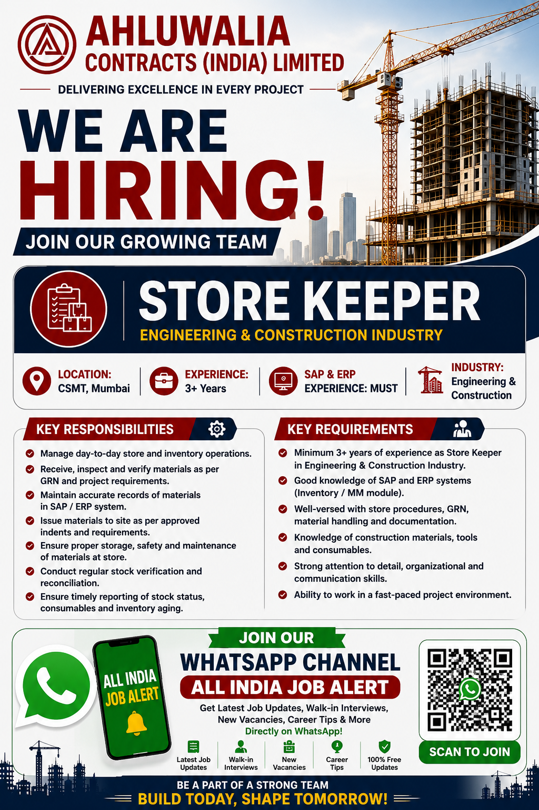

Ahluwalia Contracts (India) Limited has announced a job opportunity for experienced Store Keeper professionals in the engineering and construction industry. Candidates who have experience in store operations, inventory management, material handling, SAP and ERP systems may apply for this opportunity.
Join our All India Job Alert WhatsApp Channel for the latest construction jobs, walk-in interviews, engineering vacancies, company hiring updates and career opportunities across India.
📲 Join All India Job Alert WhatsApp ChannelThe Store Keeper position is an important role in any engineering and construction project. Construction projects require a large quantity of materials, equipment, tools and consumables. Proper storage, issuing, receiving and tracking of these materials are necessary for smooth project execution. The selected candidate will be expected to manage day-to-day store and inventory operations in a professional and organized manner.
Candidates with previous experience in engineering and construction projects may have an advantage. The role requires knowledge of construction materials, inventory procedures, GRN documentation and stock management. Candidates should also be comfortable working with SAP and ERP systems, especially inventory or MM-related modules.
| Job Information | Details |
|---|---|
| Company | Ahluwalia Contracts (India) Limited |
| Job Position | Store Keeper |
| Job Location | CSMT, Mumbai |
| Experience | Minimum 3+ Years |
| Industry | Engineering & Construction |
| Required Knowledge | SAP & ERP Systems |
| Application Email | hrmumbai@acilnet.com |
The Store Keeper will be responsible for managing the daily activities of the project store. This includes receiving materials from suppliers, checking the quantity and condition of materials, maintaining records and ensuring that the required materials are available for project requirements.
Candidates applying for this Store Keeper vacancy should have relevant experience in the engineering and construction industry. The company is looking for candidates who understand store procedures and can work responsibly with inventory and materials.
Don't miss new job vacancies. Join All India Job Alert WhatsApp Channel and receive regular job updates directly on WhatsApp.
📢 JOIN WHATSAPP CHANNEL NOWA well-managed store plays a major role in the success of construction projects. Large projects use cement, steel, electrical materials, plumbing materials, tools, safety equipment and many other consumables. If materials are not properly recorded and managed, it can result in delays, shortages or unnecessary losses.
A professional Store Keeper helps maintain accurate inventory information and ensures that materials are issued according to project requirements. Regular stock verification and reconciliation help identify differences between physical stock and system records. This makes the Store Keeper position a responsible and important role in project operations.
Knowledge of SAP and ERP systems is also valuable because many organizations use digital systems to manage inventory. Candidates who understand system-based stock management, GRN procedures and inventory documentation may find better career opportunities in large engineering and construction companies.
Interested and eligible candidates can send their updated CV or resume to the following official recruitment email address:
Email: hrmumbai@acilnet.com
📧 Send Resume by EmailBefore sending your resume, make sure your CV includes your current experience, previous company details, skills, SAP or ERP knowledge and relevant store management experience.
Candidates should keep their resume updated before applying. Mention your current designation, total work experience, construction project experience and inventory management skills clearly. If you have worked with SAP, ERP, GRN or inventory systems, mention those skills in your CV.
Always verify recruitment information before sharing personal documents or making any payment. Job seekers should be careful about fraudulent job offers. Never pay money for a job opportunity unless you independently verify the recruitment process and company details.
Get the latest job vacancies, private company jobs, construction jobs, engineering jobs and walk-in interview updates directly on WhatsApp.
✅ JOIN ALL INDIA JOB ALERTThis Store Keeper vacancy can be a good opportunity for experienced candidates from the engineering and construction sector. Candidates who have at least three years of relevant experience and knowledge of SAP and ERP systems can review the requirements and submit their updated resume through the email address mentioned above.
Keep your resume professional and include all important information related to your experience, inventory management skills, construction material knowledge and software experience. Eligible candidates should apply using the official contact details provided for this job opportunity.